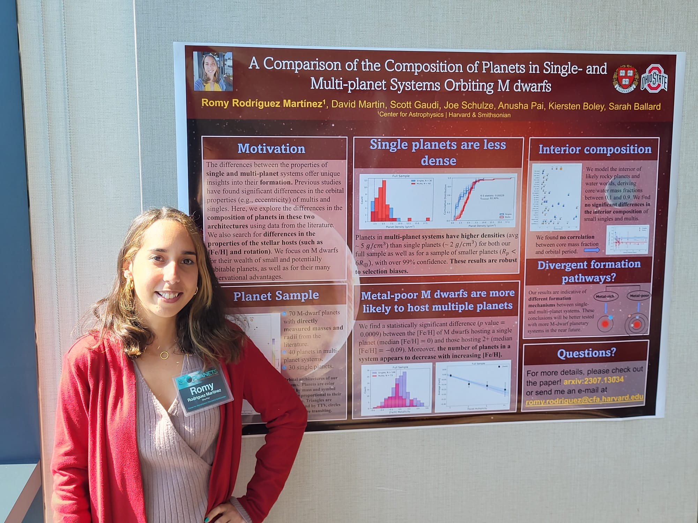
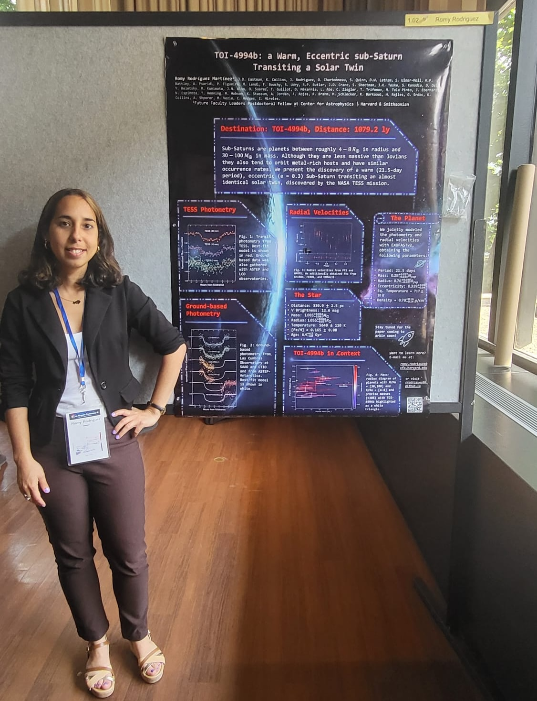
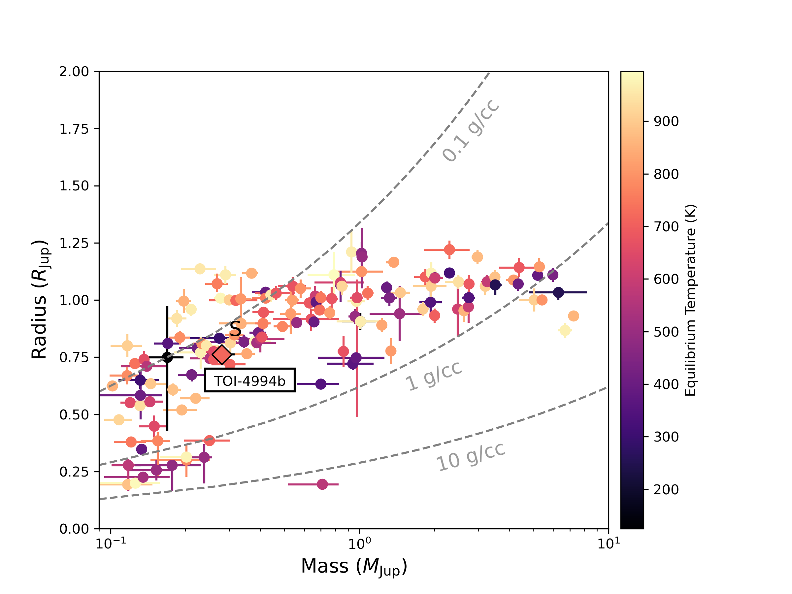
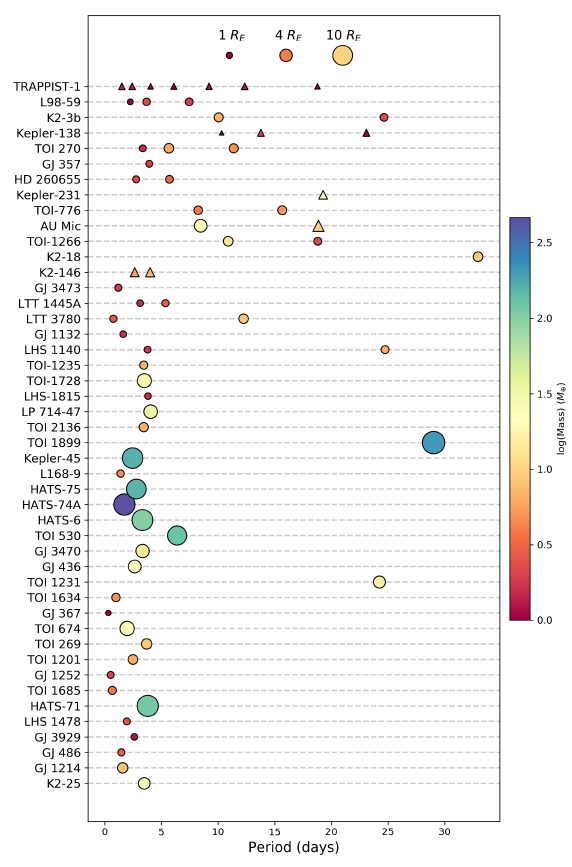
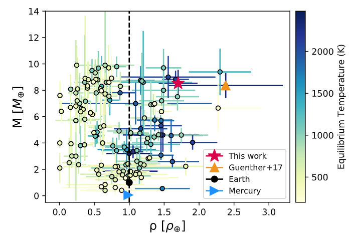
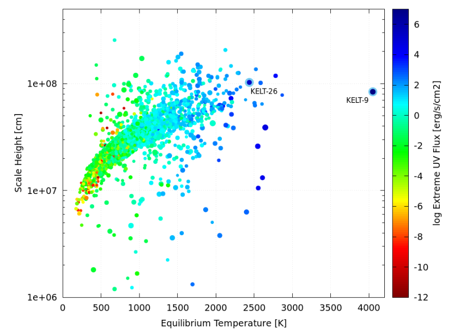
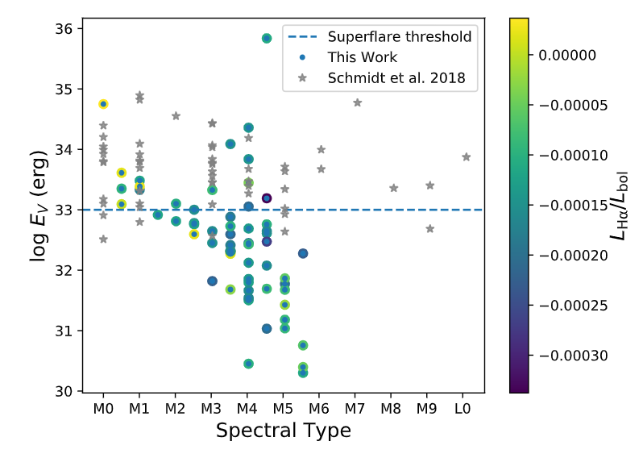
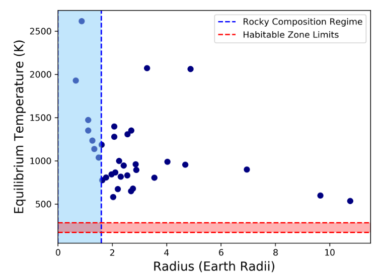

About Me

Hello, there! My name is Romy and I am an exoplanet astronomer. I earned my Ph.D. in Astronomy at The Ohio State University, where I worked under the supervision of Professor Scott Gaudi. I am presently a Future Faculty Leaders Postdoctoral Fellow in Prof. David Charbonneau's group at the Harvard & Smithsonian Center for Astrophysics in Cambridge, Massachusetts.
I have worked on a wide variety of exoplanet-related topics, but I am mainly interested in the detection and characterization of low-mass, transiting exoplanets. I use ground-based and space-based observations and various tools to determine the fundamental properties of small planets and their host stars. In particular, I combine the planets' properties with the stellar elemental abundances of their host stars to infer aspects of the interior and composition of the planets. I am particularly interested in M-dwarf planetary systems, in part because of their potential for habitability. I am also very curious about the study of planetary composition through observations of so-called polluted white dwarfs. I’m currently working on the composition and demographics of M-dwarf planets. Previously, I worked on the the reanalysis of K2-106b, an ultra-short period super-Mercury candidate, and showed that the planet’s mass and radius are more consistent with an Earth-like, rather than Mercury-like, composition. Using data from the Kilodegree Extremely Little Telescope (KELT) survey and the Transiting Exoplanet Survey Satellite (TESS), I led the discovery of two ultra short-period hot Jupiters, KELT-25b and KELT-26b. Previously, I worked with Professor Laura Lopez studying the variability and flare rates of M-dwarf stars using data from the All-Sky Automated Survey for SuperNovae (ASAS-SN). During that time, in collaboration with the ASAS-SN team, I also led the discovery of a powerful flare on a previously undiscovered M dwarf.
I obtained a Bachelors and Master's degree in Physics at the University of Puerto Rico, Río Piedras. For my Master's thesis, I worked under the supervision of Professor Sarah Ballard on the characterization of M-dwarf exoplanet hosts using near-infrared spectroscopy. I enjoy science outreach and mentoring and have mentored OSU undergraduates and high school students.
In my spare time, I enjoy playing piano, painting, and learning languages.
For more details about my interests and contributions, read my CV .
Research

I am an observational astronomer specializing on the characterization and composition of small (roughly 1--4 Re) exoplanets. I am interested in exploring their interior and quantifying their compositional diversity, which enables a deeper understanding of their formation and evolution. I am particularly interested in planetary systems orbiting the most common stars, M-dwarfs. However, I have been fortunate to work on a wide range of projects during my PhD, which I briefly summarize below.
See my publications through ADS here.
TOI-4994b: An eccentric, warm Saturn transiting a solar twin
We characterized a new rare and eccentric warm Saturn discovered by TESS, read the publication for more details here!.

Comparing Single- and Multi-planet Systems
The comparison of single- versus multi-planet systems provides useful constraints for theories of planet formation. I took a sample of M-dwarf planets with directly measured masses, radii, and densities from the literature to infer and compare the interior compositions of planets that are isolated (single) versus those that reside in multi-planet systems. I also explored the properties of their host stars, finding significant differences in both the planetary and stellar properties of multis and singles.
For more details about this work, please read the publication here.

An Ultra-Short Period, Ultra-Dense Planet
Using archival data from the literature, I revisited the K2-106 transiting system, which contains an ultra-short period, putative Super-Mercury planet, K2-106b. This planet was reported to have an atypically high bulk density of roughly 13 g/cc (over twice as dense as Earth). We used an improved parallax from Gaia DR3 in tandem with the Fe/Mg/Si stellar abundances of the host star to improve upon existing mass and radius measurements of this hot, rocky planet. We showed that its composition is entirely consistent with an Earth-like mixture of rock and iron, rather than a Mercury-like composition, as was previously thought.
For more details about this work, please read the publication here.

Hot Jupiters Around Hot Stars
Last year, I worked on the characterization of two ‘hot Jupiters’ (Jupiter-sized planets in short-period orbits), discovered by the KELT collaboration and observed by TESS. KELT-25b and KELT-26b are both very close to their A-type parent stars, resulting in extremely high equilibrium temperatures and inflated atmospheres. These objects represent good opportunities for follow-up atmospheric characterization.
For more details about this work, please read the publication here.

M-dwarf Flares
M dwarf stars are the coolest (temperature-wise) and the most common type of star, comprising about 75% of all stars in the Milky Way. These stars are very magnetically active compared to hotter stars, and they exhibit star spots, coronal mass ejections, and stellar flares that are detectable across all wavelengths.
Flares are powerful bursts of energy that result from magnetic lines reconnecting in the surface of stars. These events not only complicate the search for exoplanets around M dwarfs, but also have important implications for the emergence and evolution of life on such planets. Studies have shown that persistent
and energetic flares can have adverse effects on the atmospheres of planets around M dwarfs. Under the guidance of Professor Laura Lopez, we studied ~90% of the known M dwarfs in the northern hemisphere with the ASAS-SN survey, finding that the later-type M dwarfs are generally more active than the earlier (hotter) stars. Read more about our work
here.

M-dwarf Planet Hosts from K2
As a student at the University of Puerto Rico, under the mentorship of Professor Sarah Ballard, I characterized a sample of M dwarfs with confirmed exoplanets from the K2/Kepler mission. We determined the physical properties of these stars by employing empirical relationships between the equivalent width of certain spectral features in the near-infrared and their radii, temperatures and luminosities. From the derived properties of the stars, we determined the radii and equilibrium temperatures of the planets transiting them. For more details, read the publication here.

Contact
Email: romy.rodriguez@cfa.harvard.edu
Address: Harvard College Observatory
60 Garden Street, MS-15
Cambridge, MA 02138-1516